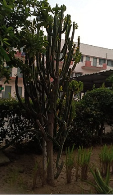

Mandacaru
Scientific name = Cereus jamacaru
It belongs to Cactaceae family or is a type of cactus.
The flowers are white and about 30 centimetres (10 in) long. The flower buds usually appear in the middle of spring and each flower lasts only for a night.
They blossom at dusk and wither by the morning
. Its fruit has a very strong violet color. The pulp is white with tiny black seeds, and it is considered very tasty. Many birds feed on them.
The mandacaru is featured on the flag of the city of Petrolina in the state of Pernambuco.